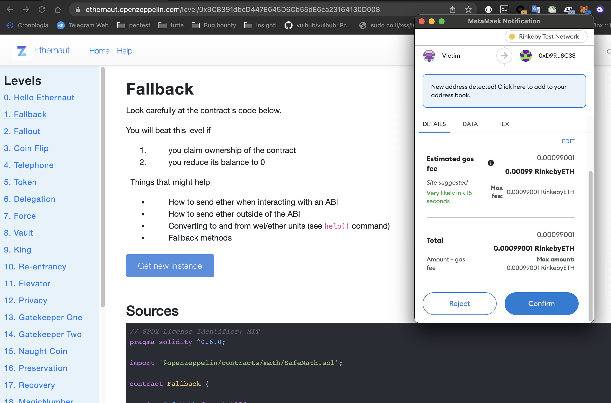
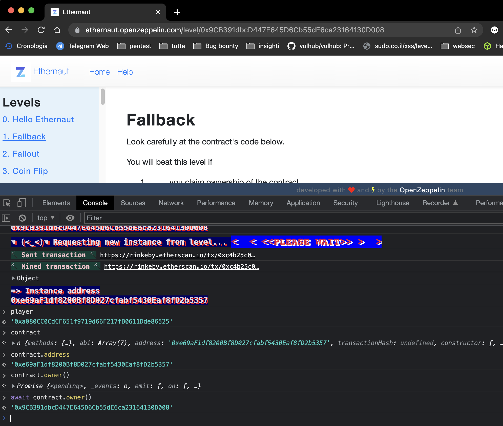
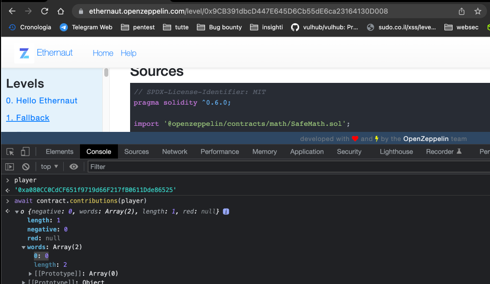
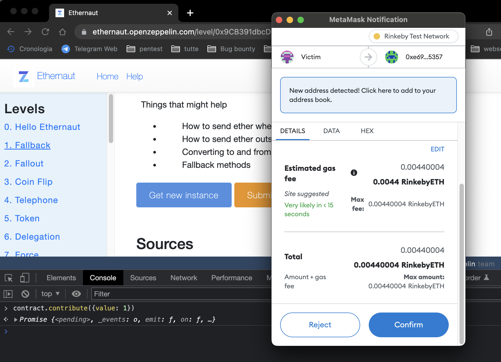
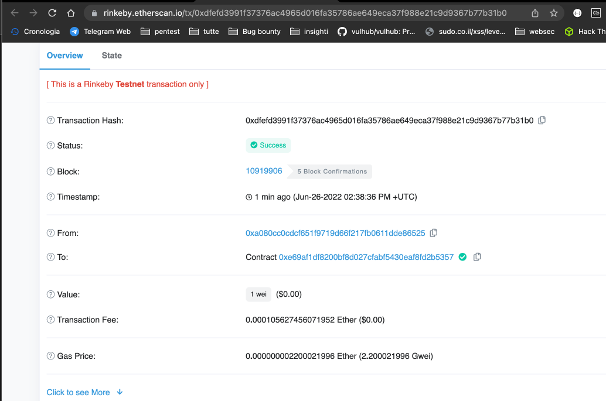
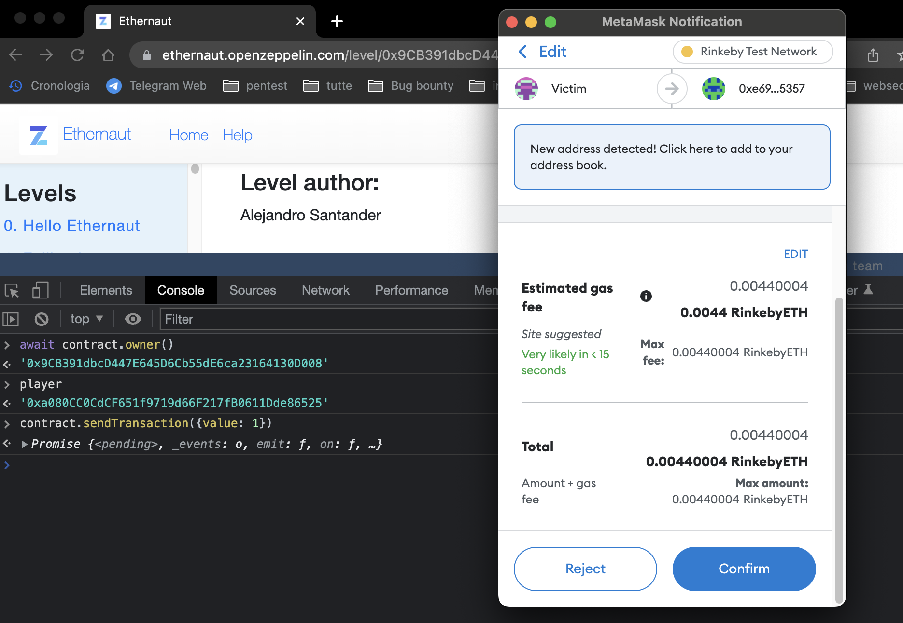
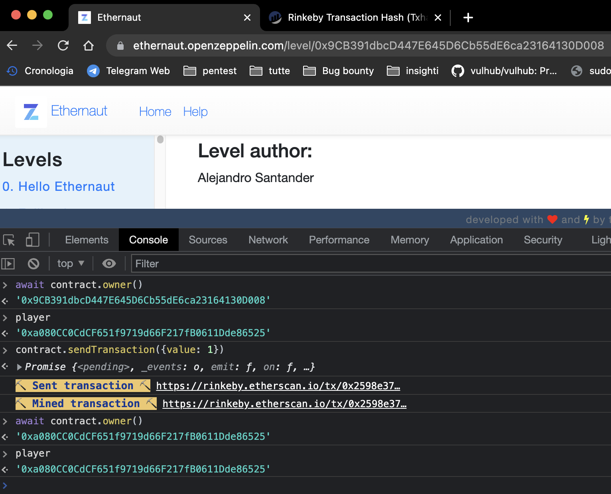
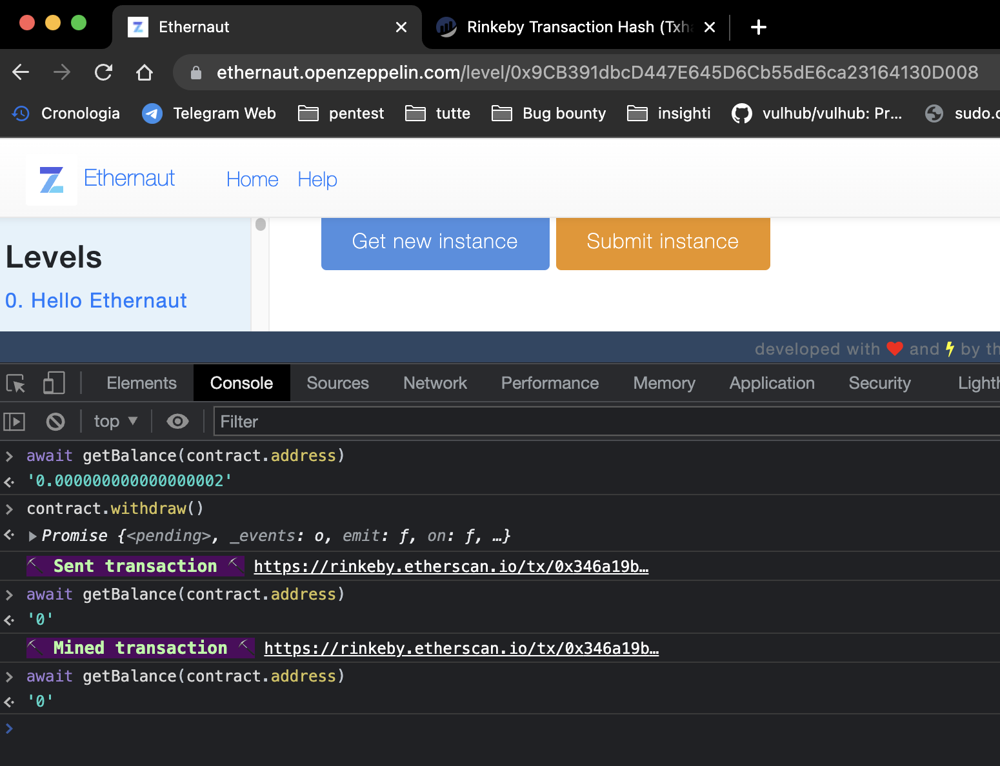
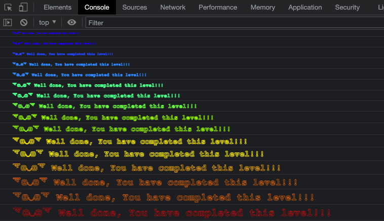

Fallback Ethernaut Challenge
Introduction
The Ethernaut is a Web3/Solidity based wargame inspired by overthewire.org,
and played in the Ethereum Virtual Machine.
Each level is a smart contract that needs to be 'hacked'.
Before you start playing this Ethernaut challenge, you need to understand a few things.
First, this challenge is about first becoming the owner of the smart contract in question.
Only the owner of this contract can do things like withdraw money from the contract.
So study the contract and look for possible ways to become its owner.
The second part of this challenge is to withdraw all the money from the contract.
We will see how to do that by interacting with a contract's ABI (Application Binary Interface).
The Challenge
Analyze The Code
The first thing we can do is to get a new istance of the smart contract.
It is important to know that when we press the Get New Istance button, we are not the principal of the contract.
Openzeppelin will deploy the contract and thus is the owner of the contract.

Now Let's jump to analyze the code and try to understand it.
After that we can see that a Solidity library called safeMath.solhas been imported .Every smart contract start with the pragma directive that specify the version of the compiler that will execute the code.
Open Zeppelin provides a whole set of smart contract libraries like safeMath allow us to safely perform mathematical operations in smart contracts.
- Smart Contracts start with the keyword contract, in this scenario the name is fallback.
- In a Smart Contracts there is a function called Constructor and this is executed only once during the lifetime of the smart contract, and it get executed when the contract is deployed.
- There is a public variable --> owner, which is of type address and is specified when the constructor is called.
The address that get insert on the public variable is the msg.sender. - msg is a global variable in your solidity code and represents the transaction. The sender value of the msg object is the actual sender of the transaction that deployed the contract.
-
Another thing that happens on the contract is this mapping called contrubutions with a certain amount of ether.
In Solidity there is a data structure called mapping that is a kind of hash map or dictionary. In our scenario this mapping contribution rappreset a "database" of addresses of how much ether/token each address has. - Finally, there is a modifier function called onlyOwner that says that whoever sends a transaction must also be the owner.
Let's take some information about the contract and other data of the challenge.
If we open our dev console in the browser, we can call a function to retrieve data.

With the first command, player we identify ourselves as our address, which is connected to the Ethernaut webiste..
After that , with contract and contract.address we can interact and see the abi and the address of the contract.
In final we can retrive who is the owner of the contract with the await js function.
Note (Contract address and onwer address are different, of course as the smart contract har his properly address,
and the owenr addres is who deployed the contract and is the owner).
The Vulnerability
Let's see now how we can be the owner of the contract and how can withdraw money from that.
If we read the code, we see a function called contribute that is payable, which means that you can send money to this function.
The first requirement is that the amount of money sent to this contract cannot be too much, it must be < than 0.001 Ether.
After the request, we set our internal "database" of contribution allocation by adding the value that the msg.sender sent to
the contribution function.
After the require functions we are setting our internal "databse" of contribution mapping, adding the value that the msg.sender sent
to the contribution function
What's interesting here is the if statement, which says that if the amount of the contribution from
the sender or the person performing the contribute function is greater > than the amount of the contribution from the owner,
then the sender of the transaction that called the function becomes the owner of the contract.
Bug:
It is possible to call the contribute function many times to get a larger contribution from the owner.
After that there is something very interesting, in the final of the contract there is a function without mane that is payable and external.
This function is very special and is the fallback function.
The fallback function in Solidity is called when you send a transaction to a contract and you do not specify the name of the function or you make a mistake, this function is called.
In the fallback function, the value we send to this function must be greater than 0. If the sender of this transaction has more than 0 contribution tokens/money in the mapping data structure (our dictionary), we can become the owner.
How to be the owner of the contract? We need to be sure to have some amount of contribution on the contract.
As we can see with the ABI of the contract with js, by calling the contract.contribution function, we can see that the player (us) has no contribution to the mapping data structure (our dictionary). So we need to contribute and send some money to the contract to fulfil one of the requirements of the fallback function.
Here we can maybe write a smart contract to interact with it, or we can use the dev console and play with the ABI structure and send some money to the contract.

What we do here, we call the function contribute and send 1 wei, so the status of the contrast will change, our contribution will be greater than 0, so the requirement is met.

We can see also on etherscan that the transaction was confirmed and we send 1 wei.
Now we need to send some money to the contract, where so also the first requirement/condition of the fallback function
will be fulfilled and we can become the owner of the contract.
When we call the sendTransaction function in our dev console to send money,
we do not call any function of the contract, so the fallback function is executed.

As we can see the result, before to sending the transaction, the owner of the contract was other than us(the player),
now, after the transaction, we are the owner of the contract and we have completed the first step of the challenge.

In the second step, we have to withdraw all the balance of the contract to 0.
We know that the withdraw function can only be called by the owner since we are now the owner, we can do it.

We can use await getBalance(contract.address) function to retrive the balance of the contract.
Now we call the withdraw function, and when the transaction is confirmed we can see that we have stolen all the money
of the contract.
Conslusion
In this first challenge of the Ethernaut Web3/Solidity wargame, we learned about ownership, about importing libraries, and most importantly about the fallback function.
Now we just need to submit the task and complete the instance.
